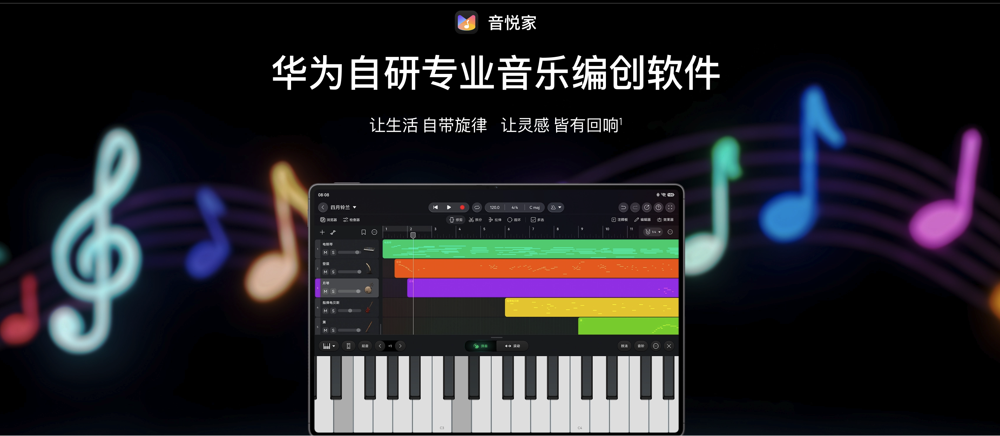
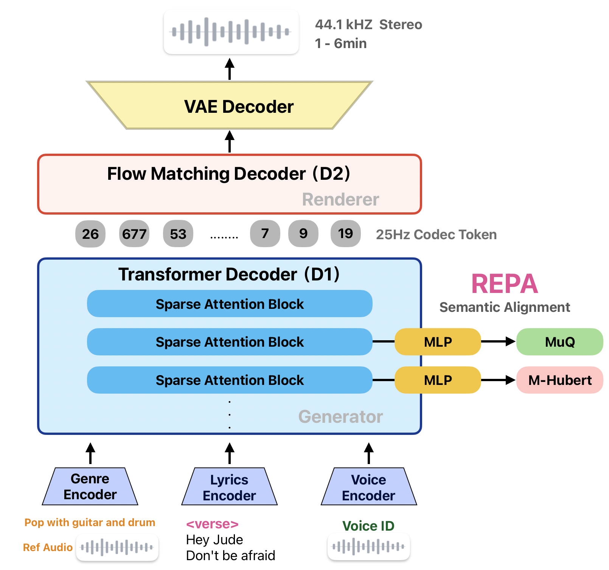

Ballad
我想你了Lyrics excerpt · Click a line to seek

PAST WORK
Generate chords from MIDI Melody
Independent Research
If the embedded studio has trouble loading or completing a task, open MECO in a separate tab ↗.
Commercially deployed in Huawei Yinyuejia (音悦家), a professional music creation app. Designed and led the development of music information retrieval (MIR) algorithms covering chord recognition, stem separation and AI accompaniment generation.

A Transformer model identifies chords in imported music and creates an editable chord track.
Separate a recording into vocal and instrumental tracks for editing and remixing.
Generate a full instrumental accompaniment that follows an input vocal track.
Generate complete songs from lyrics, genre and voice inputs, with 44.1 kHz stereo output lasting 1–6 minutes.

Lyrics excerpt · Click a line to seek
Lyrics excerpt · Click a line to seek
Lyrics excerpt · Click a line to seek